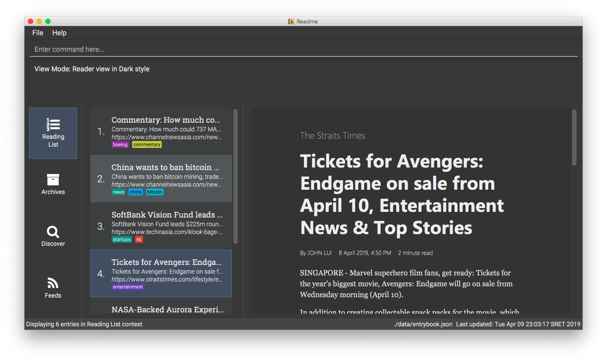

By: CS2103-AY1819S2-W10-1 Since: Jan 2019 Licence: MIT
- 1. Introduction
- 2. Quick Start
- 3. Command Format
- 4. Non-contextual commands
- 4.1. Custom user command macro:
macro[coming in v2.0] - 4.2. Export settings and data to an export file :
export[coming in v2.0] - 4.3. Import settings and data from an export file :
import[coming in v2.0] - 4.4. Listing entered commands :
history - 4.5. Viewing help :
help - 4.6. Exiting the program :
exit
- 4.1. Custom user command macro:
- 5. Context-switching commands
- 5.1. Showing entries:
list - 5.2. Showing archived entries:
archives[coming in v2.0] - 5.3. Searching online for entries:
search[coming in v2.0] - 5.4. Showing feeds:
feeds[coming in v2.0] - 5.5. Searching online for feeds:
searchfeeds[coming in v2.0] - 5.6. Showing reading statistics:
stats[coming in v2.0]
- 5.1. Showing entries:
- 6. In
listcontext (displays entry list)- 6.1. Adding a single entry:
add[updated v1.2] - 6.2. Adding entries from a web feed:
feed[since v1.2] - 6.3. Editing an entry:
edit - 6.4. Finding entries by title:
find - 6.5. Selecting an entry:
select - 6.6. Changing the view mode:
view[since v1.2] - 6.7. Listing links in current web page:
links[coming in v2.0] - 6.8. Redownloading an entry:
redownload[coming in v2.0] - 6.9. Marking an entry as read:
read[coming in v2.0] - 6.10. Marking an entry as unread:
unread[coming in v2.0] - 6.11. Sharing an entry:
share[coming in v2.0] - 6.12. Archiving an entry:
archive[coming in v2.0] - 6.13. Deleting an entry:
delete - 6.14. Clearing all entries :
clear
- 6.1. Adding a single entry:
- 7. In
archivescontext (displays entry list)[all coming in v2.0] - 8. In
searchcontext (displays entry list)[all coming in v2.0] - 9. In
feedscontext (displays feed list)[all coming in v2.0] - 10. In
searchfeedscontext (displays feed list)[all coming in v2.0] - 11. FAQ
- 12. Command Summary
1. Introduction
README is an integrated bookmark manager and feed reader desktop application that helps you read more content you care about anywhere you go. You’ll love README if you consume a lot of web content and want to keep up to date with your favourite websites but you’re a road warrior who doesn’t have regular Internet access. Whether you’re heading off on a long flight or working in a cafe, README has you covered with all the content you care about in one place. README is for those who prefer to use a desktop app for subscribing to web feeds and saving web pages to read later on their personal computer. More importantly, README is optimized for those who prefer to work with a Command Line Interface (CLI) while still having the benefits of a Graphical User Interface (GUI). If you can type fast, README can make you more efficient at consuming content than traditional GUI apps. Interested? Jump to the Section 2, “Quick Start” to get started. Enjoy!
2. Quick Start
-
Ensure you have Java version
9or later installed in your Computer. -
Download the latest
README.jarhere. -
Copy the file to the folder you want to use as the home folder for your README.
-
Double-click the file to start the app. The GUI should appear in a few seconds.
 -
Type the command in the command box and press Enter to execute it.
e.g. typinghelpand pressing Enter will open the help window. -
Try these commands in order!
-
list: shows your reading list of all saved links -
select1: selects the first entry for reading -
addl/https://en.wikipedia.org/wiki/Special:Random: adds a random Wikipedia page to your reading list -
select7: selects the Wikipedia page for reading -
feedhttp://rss.nytimes.com/services/xml/rss/nyt/World.xml: adds all the latest articles from the New York Times world news feed -
select8: selects the first NYT article for reading -
viewreader: switches to a more comfortable reading experience -
delete8: deletes the first NYT article entry -
exit: exits the app
-
-
Refer to below for details of each command.
3. Command Format
-
Words in
UPPER_CASEare the parameters to be supplied by the user. -
Items in square brackets are optional.
-
Items with
… after them can be used multiple times including zero times. -
Parameters can be in any order.
4. Non-contextual commands
These commands can be used from any context.
4.1. Custom user command macro: macro [coming in v2.0]
Creates macros that compose commands together.
Format: macro MACRO_NAME NUM_ARGS command1; command2; … commandN
Examples:
-
macro archive-tags-which-are-old 1 find t/$1 d/3 days ago; archive all
4.2. Export settings and data to an export file : export [coming in v2.0]
Exports the feeds, saved data, history, and other preferences to an export file.
Format: export FILE_PATH
Examples:
-
export /home/tt/DesktopSaves an export file to desktop -
export C:\Users\Name\DesktopSaves an export file to desktop
4.3. Import settings and data from an export file : import [coming in v2.0]
Imports the feeds, saved data, history, and other preferences from an export file.
Format: import FILE_PATH
Examples:
-
import /home/tt/Desktop/export.jtjrSaves an export file to desktop -
import C:\Users\Name\Desktop\export.jtjrSaves an export file to desktop
4.4. Listing entered commands : history
Lists all the commands that you have entered in reverse chronological order.
Format: history
|
Pressing the ↑ and ↓ arrows will display the previous and next input respectively in the command box. |
4.5. Viewing help : help
Format: help
5. Context-switching commands
These commands can be used from any context but change the context in which commands with shared command words operate (e.g. add, edit, delete).
5.2. Showing archived entries: archives [coming in v2.0]
Shows a list of archived entries, optionally finding entries with titles containing any of the given keywords, and filtering by read status, date added and tags.
Format: archives [KEYWORDS]… [r/READ_STATUS] [d/DATE_ADDED] [t/TAG]…
Examples:
-
archivesLists all archived entries -
archives Apple r/read t/TechLists archived entries with titles containingapplewhich are already read and tagged withTech -
archives TrumpLists archived entries with titles containingtrumpandDonald Trumpetc. -
archives r/unreadLists only unread archived entries -
archives t/TechLists archived entries tagged with “Tech” -
archives t/Lists untagged archived entries
5.3. Searching online for entries: search [coming in v2.0]
Searches online for entries that you can subsequently add.
Format: search [KEYWORD]…
Format: search FEED_URL
Format: search ARTICLE_URL
Examples:
-
searchReturns top headlines -
search TrumpReturns entries containing theTrumpkeyword -
search https://live.engadget.com/rss.xmlReturns entries from this feed -
search https://live.engadget.com/2019/02/08/microsoft-internet-explorer-technical-debt/Returns all entries from this article
5.4. Showing feeds: feeds [coming in v2.0]
Shows a list of feeds being followed.
Format: feeds [t/TAG]…
Examples:
-
feedsLists all feeds -
feeds t/BusinessLists all feeds tagged with “Business”
5.5. Searching online for feeds: searchfeeds [coming in v2.0]
Searches online for feeds that you can subsequently follow.
Format: searchfeeds [KEYWORD]…
Examples:
-
searchfeedsShows some starter feeds you can add -
searchfeeds Tech BusinessSearches forTechorBusinessfeeds
5.6. Showing reading statistics: stats [coming in v2.0]
Shows helpful and fun statistics about your reading progress and habits.
Format: stats
6. In list context (displays entry list)
6.1. Adding a single entry: add [updated v1.2]
Adds a single entry from a link URL to your reading list. Content is automatically downloaded onto your personal computer.
Format: add l/URL [ti/TITLE_OVERRIDE] [d/DESCRIPTION_OVERRIDE] [t/TAG]…
The Title and Description fields are automatically filled if you do not provide them.
|
| A entry can have any number of tags (including 0). |
Examples:
-
add l/https://www.theatlantic.com/magazine/archive/2019/03/ford-ceo-jim-hackett-ux-design-thinking/580438/ d/Explains why UX is important t/Business
Adds a single entry with a description and tagged with “Business”
6.2. Adding entries from a web feed: feed [since v1.2]
Adds all entries from a web feed to your reading list. Content is automatically downloaded onto your personal computer.
Format: feed FEED_URL
| The application may freeze for a short time as it downloads content onto disk. |
Examples:
-
feed http://rss.nytimes.com/services/xml/rss/nyt/World.xml
Adds all the entries from the New York Times world news feed to your reading list.
6.3. Editing an entry: edit
Edits an existing entry in the reading list.
Format: edit INDEX [ti/TITLE_OVERRIDE] [d/DESCRIPTION_OVERRIDE] [s/STATUS] [t/TAG]…
Examples:
-
edit 1 ti/Software Design Patterns d/Useful for software engineering project.
Edits the title and description of the 1st entry to beSoftware Design PatternsandUseful for software engineering project.respectively. -
edit 2 t/
Clears all existing tags from the 2nd entry.
6.4. Finding entries by title: find
Finds entries whose titles contain any of the given keywords.
Format: find KEYWORD [MORE_KEYWORDS]
Examples:
-
find Trump
Returns entries with titles containingtrumpandDonald Trumpetc. -
find Boeing FAA
Returns any entry having titlesBoeingorFAA
6.5. Selecting an entry: select
Selects the entry identified by the index number used in the displayed entry list for reading.
Format: select INDEX
Examples:
-
list
select 2
Selects the 2nd entry in the reading list for reading. -
find Trump
select 1
Selects the 1st entry in the results of thefindcommand for reading.
6.6. Changing the view mode: view [since v1.2]
Changes the view mode between the original browser or a more comfortable reading experience.
Format: view MODE(browser, reader)
Examples:
-
view browser
Switches to browser view mode -
view reader
Switches to a clean and clutter-free reader view mode for a more comfortable reading experience
6.7. Listing links in current web page: links [coming in v2.0]
Lists all the links in the current web page and switches context to search.
Equivalent to search CURRENT_WEB_PAGE.
Format: links
6.8. Redownloading an entry: redownload [coming in v2.0]
Redownload the specified entry to get the latest version of its content.
Format: redownload INDEX
Examples:
-
list
redownload 2
Refreshes the content of the 2nd entry in the reading list.
6.9. Marking an entry as read: read [coming in v2.0]
Marks the specified entry as read.
Format: read INDEX
Examples:
-
list
read 2
Marks as read the 2nd entry in the reading list.
6.10. Marking an entry as unread: unread [coming in v2.0]
Marks the specified entry as unread.
Format: unread INDEX
Examples:
-
list
unread 2
Marks as unread the 2nd entry in the reading list.
6.11. Sharing an entry: share [coming in v2.0]
Shares the specified entry through connected social media.
Format: share INDEX
6.12. Archiving an entry: archive [coming in v2.0]
Moves the specified entry to the archive and removes its downloaded content.
Format: archive INDEX
Examples:
-
list
archive 2
Moves the 2nd entry in the reading list to the archive and removes its downloaded content.
6.13. Deleting an entry: delete
Deletes the specified entry from the reading list.
Format: delete INDEX
Examples:
-
list
delete 2
Deletes the 2nd entry in the reading list. -
find Trump
delete 1
Deletes the 1st entry in the results of thefindcommand.
7. In archives context (displays entry list) [all coming in v2.0]
7.1. Unarchiving entries: unarchive
Adds the entries back to the entry list and downloads their content onto disk.
Format: unarchive INDICES
Format: unarchive all
Examples:
-
unarchive allUnarchives all shown entries -
unarchive 1,2,4-6Unarchives the 1st, 2nd and 4th to 6th entries
7.2. Deleting an archived entry: delete
Deletes specified archived entries from the manager.
Format: delete INDICES
Format: delete all
Examples:
-
delete 1,2-6Deletes the 1st, and 2nd to 6th entries
8. In search context (displays entry list) [all coming in v2.0]
8.1. Adding entries: add
Adds entries from search results to the manager. Content is automatically downloaded to disk.
Format: add INDEX [ti/TITLE_OVERRIDE] [d/DESCRIPTION_OVERRIDE] [t/TAG]…
Format: add INDICES [d/DESCRIPTION_OVERRIDE] [t/TAG]…
Format: add all
|
A entry can have any number of tags (including 0). Title will be automatically filled by parsing the entry if you do not provide it. |
Examples:
-
add 1 c/explains why UX is important t/BusinessAdds the 1st entry with a description and tagged with “Business” -
add 4-6 c/read by Monday t/SchoolAdds the 4th to 6th entries with the same description and tagged with “School"
8.2. Selecting a entry: select
Selects the entry identified by the index number used in the displayed entry list for viewing.
Format: select INDEX
Examples:
-
select 2Selects the 2nd entry in the manager
8.3. Changing the viewing mode: view
Changes the viewing mode between the original browser view or a more comfortable reading experience.
Format: view MODE [s/style] [o/options]
Examples:
-
view browserUse browser view -
view readerUse reader view -
view reader s/darkUse reader view with dark style -
view reader o/fullscreenUse reader view with maximised window -
view reader s/solarized o/fullscreenUse reader view with "Solarized" style and maximised window
9. In feeds context (displays feed list) [all coming in v2.0]
9.1. Adding a feed: add
Adds a feed to the manager and subscribes to updates.
Format: add URL [n/NAME] [t/TAG]…
|
A feed can have any number of tags (including 0) |
Examples:
-
add https://www.engadget.com/rss.xml n/Engadget t/TechAdds a feed whose name is “Engadget” and whose entries will be tagged with “Tech”
9.2. Updating entries from feeds: update
Refreshes all feeds.
Format: update INDICES
Format: update all
Examples:
-
update allUpdates entries from all feeds -
update 2Updates entries from the 2nd feed
9.3. Selecting a feed: select
Selects the feed identified by the index number used in the displayed feed list and displays its entries.
Format: select INDEX
Examples:
-
select 2Selects the 2nd feed in the manager and displays its entries
9.4. Editing a feed: edit
Edits an existing feed in the manager.
Format: edit INDEX [u/URL] [n/NAME] [t/TAG]…
Examples:
-
edit 1 n/HackerNewsEdits the name of the 1st feed -
edit 2 t/Clears all existing tags from the 2nd feed
9.5. Deleting a feed: delete
Deletes the specified feeds from the manager and unsubscribes from them, but existing entries obtained from that feed will not be deleted.
Format: delete INDICES
Format: delete all
Examples:
-
delete allDeletes all shown feeds -
delete 2Deletes the 2nd feed
10. In searchfeeds context (displays feed list) [all coming in v2.0]
10.1. Adding a feed: add
Adds a feed from the search results to the manager and subscribes to updates.
Format: add INDEX [n/NAME] [t/TAG]…
Format: add INDICES [t/TAG]…
Format: add all
|
A feed can have any number of tags (including 0) |
Examples:
-
add allAdds all shown feeds -
add 1 n/Engadget t/TechAdds a feed whose name is “Engadget” and whose entries will be tagged withTech -
add 5-9 t/WorkAdds the 5th to 9th feeds whose entries will be tagged withWork
10.2. Selecting a feed: select
Selects the feed identified by the index number used in the displayed feed list and displays its entries.
Format: select INDEX
Examples:
-
select 2Selects the 2nd feed in the manager and displays its entries